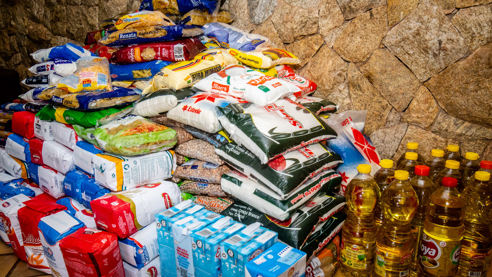
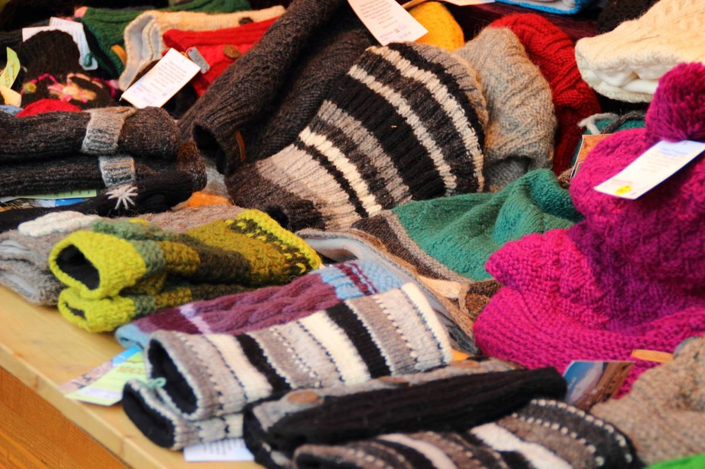

Igreja Central
Um espaço de fé, esperança e comunidade
Arrecadação de Doações
Contribua para transformar vidas
Como Ajudar
Nosso programa de arrecadação de doações tem como objetivo ajudar famílias em situação de vulnerabilidade, fornecendo alimentos, roupas, materiais escolares e outros itens essenciais.
Você pode contribuir doando itens diretamente na igreja ou realizando uma doação financeira para apoiar nossas ações sociais.

Campanha de Agasalhos
Durante os meses mais frios do ano, arrecadamos agasalhos, cobertores e calçados para distribuir às famílias necessitadas.
Participe e faça a diferença! Suas doações podem trazer conforto e alegria para quem mais precisa.

Pontos de Coleta
Igreja Central - Secretaria Paroquial (Segunda a Sexta, das 9h às 18h)
Postos de arrecadação parceiros em diversos bairros